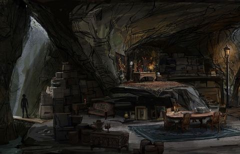

HISTORICAL
FIGURES
TBW
|
 Description |
|---|
Nahldur
TBW
Elmira Themenor
This remote area began in the cold, forbidding lands along the great ice sheets and continued south toward the northeastern shores of the Sea of Fallen Stars, collectively known as the Cold Lands. It was bordered on the west by the mountain-hemmed land of Vaasa and stretched east to the vast steppes of the Hordelands. This remote area began in the cold, forbidding lands along the great ice sheets and continued south toward the northeastern shores of the Sea of Fallen Stars, collectively known as the Cold Lands. It was bordered on the west by the mountain-hemmed land of Vaasa and stretched east to the vast steppes of the Hordelands.
|
Nahldur's cultists performing a ritual. |
|---|
Sylvar Arressius
This remote area began in the cold, forbidding lands along the great ice sheets and continued south toward the northeastern shores of the Sea of Fallen Stars, collectively known as the Cold Lands. It was bordered on the west by the mountain-hemmed land of Vaasa and stretched east to the vast steppes of the Hordelands. This remote area began in the cold, forbidding lands along the great ice sheets and continued south toward the northeastern shores of the Sea of Fallen Stars, collectively known as the Cold Lands. It was bordered on the west by the mountain-hemmed land of Vaasa and stretched east to the vast steppes of the Hordelands.
Ilmare Lahlenna
This remote area began in the cold, forbidding lands along the great ice sheets and continued south toward the northeastern shores of the Sea of Fallen Stars, collectively known as the Cold Lands. It was bordered on the west by the mountain-hemmed land of Vaasa and stretched east to the vast steppes of the Hordelands. This remote area began in the cold, forbidding lands along the great ice sheets and continued south toward the northeastern shores of the Sea of Fallen Stars, collectively known as the Cold Lands. It was bordered on the west by the mountain-hemmed land of Vaasa and stretched east to the vast steppes of the Hordelands.